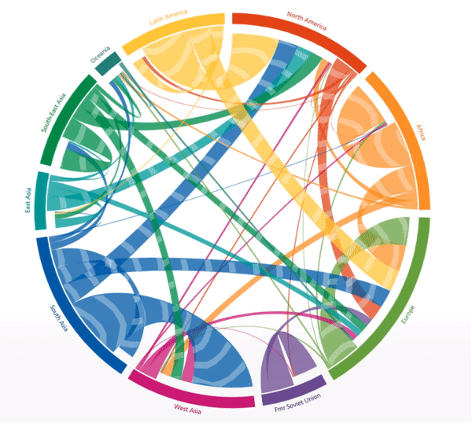
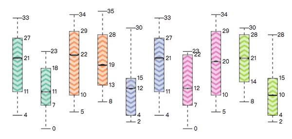
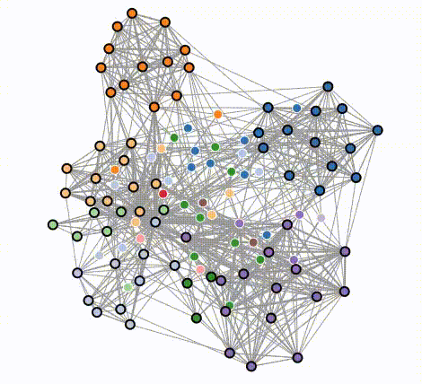
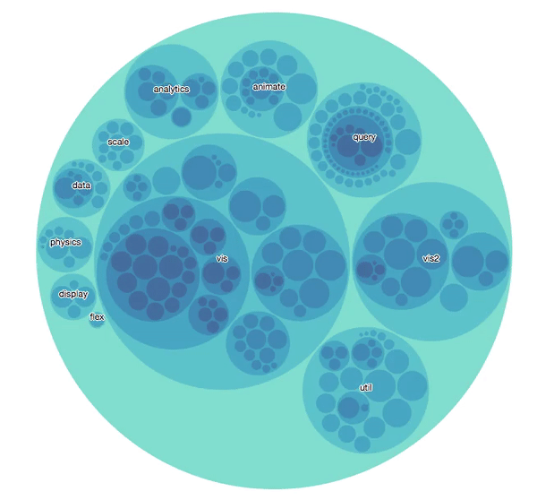
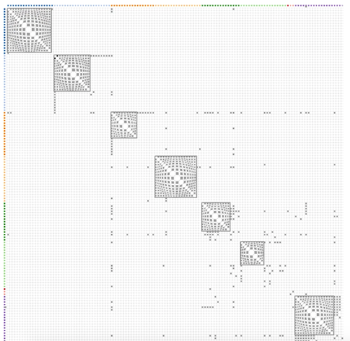
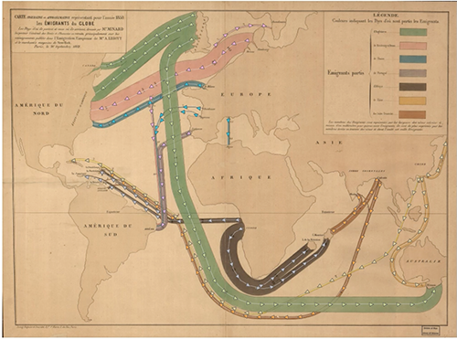
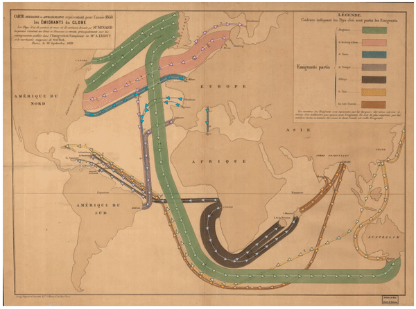
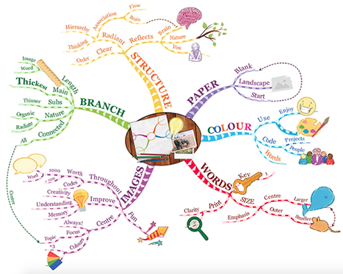
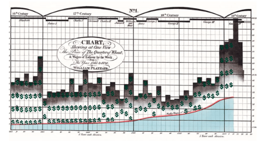

Marching Ants + Circos


A circos enhanced with MA over top its ribbons. The speed of the ants in this case corresponds to the capacity of each ribbon, such that a larger capacity induces a faster movement. While the capacity is also visualized by the width of the ribbon, minute differences between ribbons are easier to discern by comparing ant speed rather than ribbon width.
Marching Ants + Boxplot


A boxplot with an added MA effect running up and down the top and bottom boxes of each plot in different speeds, in order to model the compactness of the distribution.
Geometry Deformation + Graph


GD effects to emphasize the existence of cliques and their magnitudes. The deformation bandwidth is driven by numerical attributes of the cliques, e.g., clique size. This creates a visual connection between the perception of clique size and the illusion of pumping/contraction.
Blinking + Circle Packing

Given a hierarchy-based data, nodes in the circular packing diagram are wrapped with a blinking visual proxy whose blinking offset is driven by the level (depth) of the node in the tree.
Geometry Deformation + Matrix


GD effects to emphasize the existence of cliques and their magnitudes. The deformation bandwidth is driven by numerical attributes of the cliques, e.g., clique size. This creates a visual connection between the perception of clique size and the illusion of pumping/contraction.
Marching Ants + Migration Flow


A dynamic version of circos of immigration flow in Charles Joseph Minard’s Immigration Flow map. The enhancement with intuitive dynamic effects achieves a multiplier effect, such as strengthened information augmentation, efficient attention attraction, vivid data representation, etc.
Marching Ants + Mind Map


Marching Ants is laid over a mind map, and the depth of branch attribute determines the speed of the ants. The deeper the branch, the faster its overlaid ants will march.
Marching Ants + Wheat Chart


Marching Ants effect is placed over the space stretching between ’wheat’ and ’wage’, with a ’$’ sign serving as the ant to represent the economic effort to reach from ’wage’ to ’wheat’. The speed of the ant is driven by the ratio between ’wage’ and price of ’wheat’, such that the faster it marches, the smaller the effort is. The fastest moving element indicates that during the 18th century the proportion of ’wheat’ price to mechanical labor was the smallest.